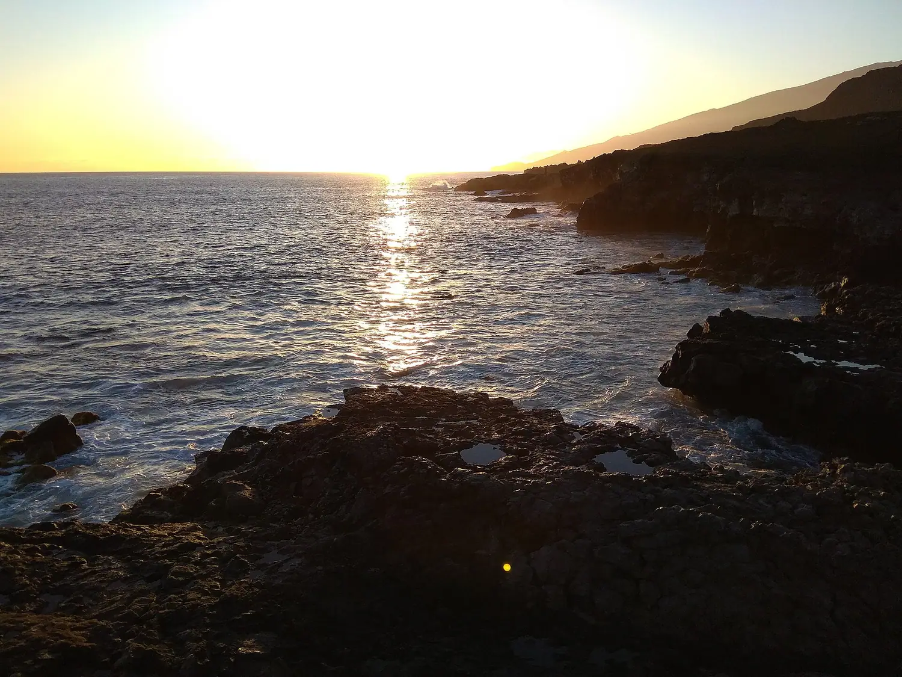

Punta Restinga
Lenguas de lava, veriles, plataformas de arena y cuevas frente al puerto. Mero, chuchos, trompeteros y peces de arrecife a poca profundidad.

Reserva Marina · Mar de las Calmas · El Hierro
Guía de identificación de 120 especies del Mar de las Calmas, ordenadas por grupo taxonómico y por la profundidad a la que realmente te las encuentras. Marca lo que ves, anota cuántos ejemplares y llévate tu bitácora contigo.
«No es que no haya vida. Es que todavía no sabemos dónde mirar.» — Agustín Fragero, autor de esta guía ↓
Mar de las Calmas · foto de Josepgras · CC BY-SA 4.0 · Wikimedia Commons ↗
Instrumento de consulta
Filtra por grupo, por banda de profundidad o por lo que aún te falta por ver. El selector de nivel cambia cuánto texto recibes: Básico da la clave de identificación, Profesional añade talla, hábitat y comportamiento, y Experto suma confusiones frecuentes, ecología y estado de conservación.
Inventario cooperativo
Aquí no gana quien más ve: gana el proyecto cuando cada persona aporta. Registrar marca presencia y el contador anota cuántos ejemplares observaste. Todo se guarda en tu propio navegador; exporta el fichero para fusionarlo con el de otro buceador.
Para el barco
En La Restinga la cobertura falla y bajo el agua no hay ninguna. Descarga las fotografías de una vez y la guía completa quedará disponible aunque te quedes sin datos. Hazlo con wifi, antes de salir.
Comprobando…
Antes de meterse en el agua
El Hierro bajo el agua
El Hierro fuera del agua
La isla a pedales
El resto del catálogo
Las diez categorías oficiales de Turismo de El Hierro, cada una enlazada a su página fuente para que consultes horarios, accesos y fotografías actualizadas antes de salir.
Parques, reservas y paisajes protegidos sobre roca volcánica.
Pueblos, rincones de costa y sitios que piden ir sin prisa.
Los puntos donde se lee el relieve, el océano y el atardecer.
Charcos y piscinas de lava: Tacorón, Charco Azul, Charco Manso.
Calas y arenales para después de la inmersión.
La puerta de entrada a toda la fauna de esta guía.
Rutas de costa, sabinar, pinares y caminos históricos.
Baja contaminación lumínica: el cielo también es patrimonio.
Geoparque, Árbol Garoé, arqueología y patrimonio religioso.
Zonas de despegue y otra forma de leer el paisaje herreño.
Base operativa
Pueblo pesquero al sur de la isla, resguardado del alisio, y puerta de entrada a la Reserva Marina. Es donde empieza y acaba cada jornada de buceo.
Lenguas de lava, veriles, plataformas de arena y cuevas frente al puerto. Mero, chuchos, trompeteros y peces de arrecife a poca profundidad.
Bajo volcánico icónico, la inmersión de referencia del Mar de las Calmas. Grandes bancos de bogas y medregales; condiciones siempre a criterio del centro.
Figura de protección que explica por qué aquí se ven meros grandes y confiados. Respeta los límites de fondeo, la prohibición de extracción y la distancia a la fauna.
La mejor lectura del paisaje: desde aquí se entiende la dorsal volcánica que baja hasta La Restinga y el porqué de un mar tan tranquilo.
Para entender la formación de la isla y la erupción submarina de 2011, que reconfiguró justo el fondo que hoy buceas.
Baño volcánico al sur, aguas habitualmente tranquilas y aparcamiento. El plan natural para las horas de desaturación entre inmersiones.
Quién firma esta guía
Alrededor de La Restinga
Selección de arranque, no un ranking. Conviene confirmar horarios antes de ir, sobre todo fuera de temporada.
El Refugio · Casa Juan · Restingolita. Pescado del día y cocina canaria a pie de puerto.
Sociedad Cooperativa Pescarestinga, en el muelle. Venta directa de los pescadores de La Restinga: lo que ha entrado ese día y sin intermediario. Lo que hay y a qué hora depende de la marea y de cómo se haya dado la jornada, así que pregunta allí mismo.
SuperDino (C. el Rancho, 15) y Padrón (C. el Rancho, 7B), ambos en La Restinga.
DISA El Pinar, C. Travesía del Pino 29, Taibique. La más cercana subiendo desde La Restinga.
Farmacia El Pinar, C. Travesía del Pino 56, Taibique.
Ambulatorio de La Restinga, C. la Restinga Cuatro.
112 para cualquier emergencia. Policía Local (Frontera): 922 555 991. La cámara hiperbárica de referencia no está en la isla: consúltalo con tu centro antes de bucear.
Cumplimiento de licencias
Trazabilidad
Cada ficha enlaza a sus fuentes primarias. La taxonomía debe contrastarse en WoRMS antes de dar por cerrada cualquier edición científica, y la presencia local en El Hierro es dato de campo, no dato bibliográfico.
World Register of Marine Species. La autoridad para nombres aceptados y sinonimias.
Observaciones georreferenciadas con fotografía y licencia declarada. La fuente de imagen del proyecto.
Registros de distribución agregados. Útil para contrastar si una especie llega de verdad a Canarias.
Red de observadores del medio marino de Canarias. El canal para reportar avistamientos relevantes.
Fuente oficial de todas las fichas turísticas enlazadas en la guía de la isla.
Autoría del contenido de buceo y de la selección de especies. Dive Master en El Hierro.
Guía Fauna Marina de El Hierro — Guía de Buceo Profesional
Respeta la vida marina: observa sin tocar, no extraigas especies ni alteres su hábitat. El mar de El Hierro es un tesoro que debemos conservar.